一段门禁判定逻辑改了三轮仍不收敛，主脑正准备从两个降级方案里选一个。顾问说都别选：越修红线越松；三轮的问题集中在一处，是因为这张卡走了唯一一条只能靠猜的路。
PR 关闭，没有合并。Agent 时代先记两个词：Context、Loop
Context 决定 Agent 这一次做得好不好；Loop 决定它下一次能不能做得更好。目标是调度越来越轻松，人不要成为系统的瓶颈。
博客原文 X Article 原文约 2 万字 · 本页导读约 20 分钟
- 先读每章顶部的「一句话结论」和「本章要点」，大约 5 分钟能抓住全文主线。
- 想看依据，再往下读：原文的 13 张图（含题图）和 2 张表都按原样放在对应位置，点图可放大。
- 最后做 5 道小题，答错会带你回到对应的章节。
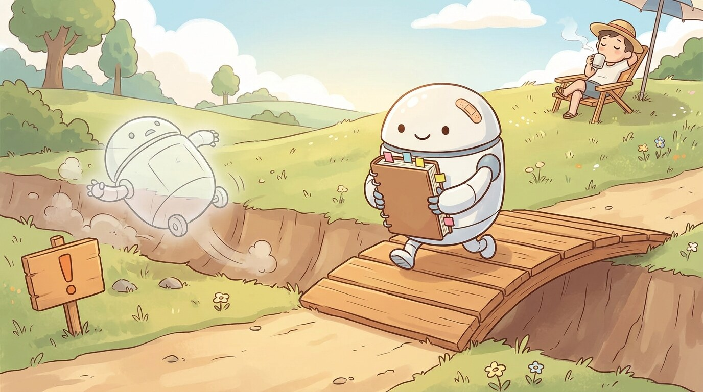
全文地图
张立行《吃一堑，长一智：Agent 时代的两个关键词 Context 与 Loop》 原文链接
静态 Context 事先备好，动态 Context 靠 Loop 产生
结果好坏，多半在提问前就决定了；能否越做越好，取决于有没有闭环把结果带回来。
- Context：给 Agent 的全部材料和规矩，从训练数据到你的仓库、知识和习惯。
- Loop：有日志能复盘、改完能验证，结果再回流成下一次的 Context。
- 作者的仓库全由 AI 提交；他投入的精力降了约一个数量级。
这篇文章由两段共 80 多分钟的语音整理而来。作者说，人只需要读懂思路和逻辑，具体执行细节把文章交给 Agent 就行。
这篇的主线
原图 2静态 Context＝事先准备好的：规则文件、Skill（技能包）、Memory（记忆）、工具配置。动态 Context＝只能靠 Loop 产生：验证之后得到结果、把错误复盘清楚，这些新东西再成为下一轮的材料。
作者说，Loop 已经有点模型训练的雏形，再往前一步就是大家常说的「自我进化」；它完全能放进自己的日常工作流：主动去搭 Context，主动去搭 Loop。
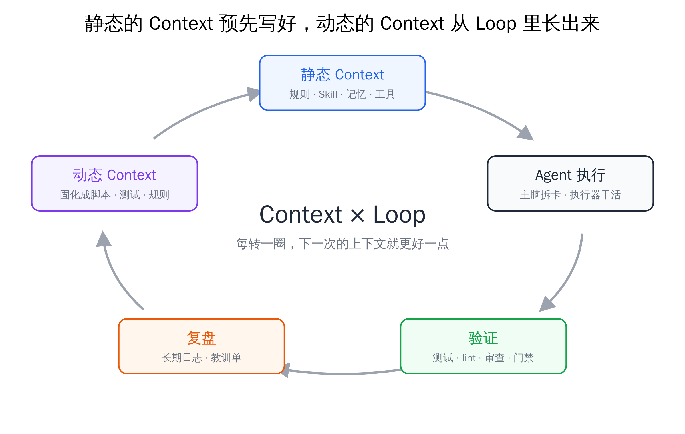
先看一组数字
作者有个名为 agent-config 的仓库，集中存放各种 AI 工具的规则与调度脚本，建于 7 月 23 日。两个月后：
≈1.6 万次提交（commit）
1800+个 issue（问题单）
≈2000个合并的 PR，全部由 AI 提交
20–30 亿每天的 Token 用量（缓存读取也算在内）
几个月前，每天约 40 亿 Token 得靠他高频盯着、频繁干预（人在环内）。如今用量相近，他每天只分出一小块时间照看 Agent。按他的体感，投入的精力降了一个数量级。他把这份功劳记在 Context 和 Loop 两样东西上。
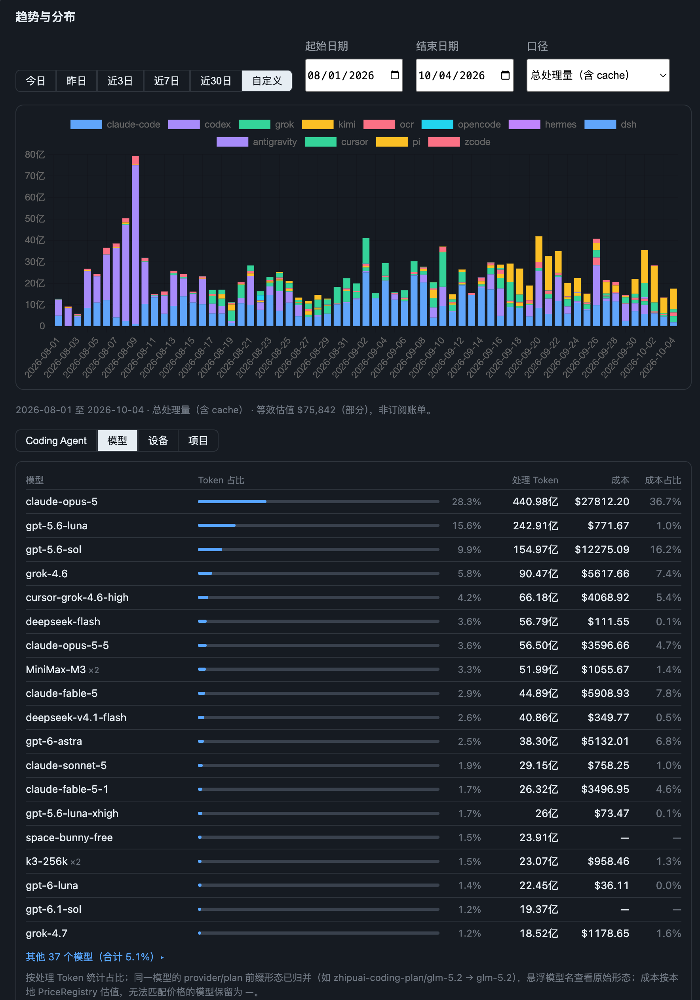
后文反复出现的三个角色
主脑拆任务、做判断、验收的 AI，相当于项目经理。
执行器照任务卡改代码的 AI，相当于动手的人。
门禁合并之前要全部通过的一组自动检查。
原文 引子：两个关键词
Coding 跑得最快，因为它同时有 Context 和 Loop
卡脖子的不再是写代码，而是一头一尾：开始前给什么上下文，完成后怎么确认做对。
- Coding 先落地，靠三点：值钱、材料多而好、对错能自动检查。
- 后两条正好对应 Context 和 Loop。
- 这两样和用什么模型无关；你能动手改的就是它们。
Coding 满足的三个条件
高价值写代码成本高，省下的就是钱。
数据充分 → Context开源项目、文档、问答网站，提供了大量训练材料。
验证可闭环 → Loop代码能跑、测试能过，写错了编译器会提示。
作者强调：这两样建好以后，贵模型、便宜模型都能帮你提高决策质量、少浪费 Token。模型进步靠厂商；你自己能改的，只有上下文和闭环。下面这句引自 Cloudflare 的《The Agent Development Lifecycle has arrived on Cloudflare》开头（作者译文）：
AI 把过去最慢、最贵的那一步——实现——变成了最快、最便宜的。
Cloudflare《The Agent Development Lifecycle has arrived on Cloudflare》（作者译文）第一章引文
原文 一、为什么偏偏是这两个词
每样进入上下文的东西，都要说明它凭什么在这里
把 Agent 的上下文窗口当成自己的注意力来省：用不着的，就拿掉。
- 地基：每个 Agent 留下的行为记录都要长期保存。
- 上下文分 6 层；除了预置 prompt，其余都由你决定。
- 每一层都应该放进 Git，长期迭代。
地基：先留住行为记录
原文 §2.1本地会话记录在 Claude Code 里默认只留 30 天。而复盘、验证、回测全靠这些记录；后文的每次删减与回测，都假定记录还在。只需改一项设置就能保留，成本极低。
上下文由哪几层组成
原文表 1| 层次 | 例子 | 能不能改 |
|---|---|---|
| 预置 prompt | Claude Code、Codex 内置的系统提示 | 闭源基本不能；开源的可以自己组装 |
| 全局规则 | ~/.claude/CLAUDE.md、~/.codex/AGENTS.md | 能 |
| 项目规则 | 仓库根目录的 CLAUDE.md / AGENTS.md | 能 |
| MCP | 各类外接工具服务 | 能 |
| Skill | 全局和项目的技能包 | 能 |
| Memory | 跨会话的记忆 | 能 |
单位按原表表头及单元格；原文没有另列脚注。
换成日常的话：规则文件＝每回开场必读的守则；Skill＝要用时才翻开的手册，平常只露一行简介；MCP＝接外部服务的插头，每个都附一本厚说明书。近一个月作者把这几层逐一删改、实测，只为两件事：活干得更好，Token 花得更少。
Git 是基石
作者把 Git 这种能随时回到旧版本的工具看成这个时代最好的软件：它把每次修改的差异都存下来，任何一条行为记录都能查到当时用的提示词、上下文、harness 和当时的代码逻辑。（harness：套在模型外面的那层客户端软件，决定 AI 能用什么工具、一开场先读什么。）所以上面每一层都该进 Git 仓库，最好同步到 GitHub，长期迭代。
预置 prompt：多半不用动
原文 §2.3闭源客户端改不动，开源的能自己拼。多数时候保持默认即可；第三章讲执行器时会再回到这里。
一份底稿，按「工具 × 角色」拼接
大厂说可以删掉旧补丁。作者的建议是：方向照着走，节奏晚半年。
- 全局规则不是写完就不管，要进仓库、长期迭代，有加法也有减法。
- 大厂敢删，是因为 Token 几乎无限；普通用户额度会用完。
- 规则不按模型分，按「工具 × 角色」分三块拼。
- 注入量上硬闸：主脑 ≤24KB，执行器 ≤12KB。
大厂的建议：删掉旧补丁
各家发布新模型时都有类似建议：针对顶级模型，删掉历史提示里那些补丁，别再反复强调「多想一点、再深一点」。最有代表性的是 Claude Code 团队 Thariq 那篇讲新一代模型上下文工程的文章，里面写道：
针对 Opus 5 和 Fable 5 这类模型，我们删掉了 Claude Code 八成以上的系统提示，编码评测没有可测量的损失。
Thariq《The new rules of context engineering for Claude 5 generation models》（作者译文）§2.4 引文
作者认为方向没错，可大厂这么做有个外人没有的条件：好模型的 Token 几乎不限量。三处都能看到这一点：Pragmatic Engineer 那篇讲 OpenAI 软件工厂的报道的开篇，Thariq 接受 Latent Space 采访时随口说的「Token 很多」，以及 Orca 创始人的访谈：模型公司里的人，很少遇上外部用户天天碰到的额度耗尽、换供应商接着跑的麻烦。
风险是：你照着顶级模型把提示词精简完，没几天额度耗尽、只能换回普通模型，可原先为普通模型加的补丁已经删掉了。所以在高智力 Token 变便宜之前（作者寄希望于大约六个月之后），先保留这些补丁。
为什么不按模型各写一份
Thariq 也说过，每个模型出错的方式都不一样；主持人顺口说那就得有 Fable.md、Opus.md；Thariq 说为每个模型各写一份很累，不停追加出错记录还会把模型管得太死。作者用的模型更多更杂（Claude、Codex、Cursor、Kimi、Grok、GLM、MiniMax、Gemini、DeepSeek，外加不少免费模型），也考虑过「强模型一套、普通模型一套」，最后放弃，原因有二：
- 证据不足：很多问题说不清该怪模型，还是该怪外壳或任务卡。
- 分不开：执行器多数跑在 Pi 上，同一个外壳换着接不同模型。
他的做法：底稿拆成三块
共用底座个人的工程习惯（比如先写测试、再写代码）和你独有的验证手段。这层所有工具、所有角色都带着，一直有效。
主脑专属派发路由、评审纪律、跨会话记忆、交付授权。这些给执行器只会添乱。
工具专属各家工具的用法和行为微调。比如 Codex 那边带全套「别过度设计」的约束，原因是 GPT 系模型往往格外严谨，容易设计过度；别的工具只带简版。微调绑在工具上，不绑在模型上。
主脑这边：三块合成每家工具的全局规则，Skill 用到再加载。执行器这边：派活那一刻临时生成，只取底座中用得上的、对应工具那一段，再加任务卡与「你是谁」的声明。跑在 Pi 上的执行器干脆不加载 Skill，系统提示总共约 7KB。
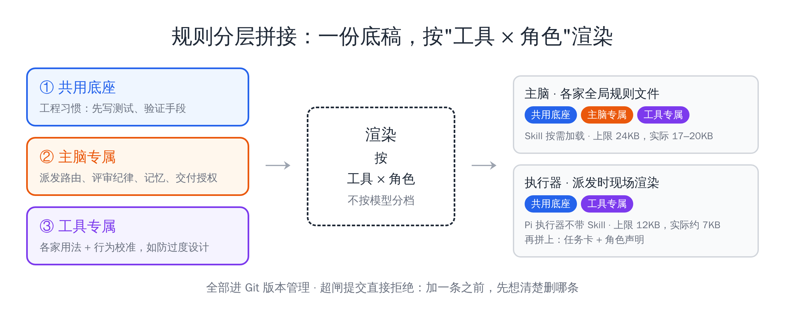
给注入量上硬闸
≤ 24KB主脑每一侧注入的规则上限（约 1.2 万汉字）
≤ 12KB执行器每一侧的上限
24.5 → 19.8KB主脑规则一度涨到 24.5KB，几乎贴线；把只在特定流程用的内容挪进按需加载的 Skill 后，压回约 19.8KB
两侧超了上限，提交时都会直接被拒。闸门的效果是：想加规则，得先决定删掉哪条。这些也都纳入版本管理，按回流的数据定期回测。
另外，Claude Code 对 AGENTS.md 的态度也变了：早先只能在 CLAUDE.md 里写一行 @AGENTS.md 去引用，算是绕道兼容；现在仓库里没有 CLAUDE.md，它就直接读 AGENTS.md。几家工具一起用，只维护 AGENTS.md 一份即可。
访谈里，Thariq 用 Fable 5 与 Fable 5.1 举例，说明版本变化也会改变失败方式。
项目规则、Memory、MCP、Skill 各有去处
开场就加载的每样东西，都得说得出留下的理由，也得随时能删。
- 约束进 AGENTS.md，事实和偏好进 Memory，踩过的坑先开教训单。
- 多客户端时，自己维护一套 Memory；小项目干脆不要 Memory。
- 有 CLI 就不用 MCP；Skill 先吸收，再装到项目，最后才装全局。
三条路，都要能进也能出
原文 §2.5AGENTS.md长期不变的约束。
Memory事实和偏好，例如某台服务器怎么部署。
教训单（issue）踩过的坑不直接写进规则，先开单，再固化成脚本、测试或闸门（第五章展开）。
上面这三条路（AGENTS.md、Memory、教训单）每条都得能进能出：东西能加进去，也要能删出来。
为什么自己管 Memory：作者同时在用 7 个客户端（Claude Code、Codex、Cursor、Grok、Kimi、OpenCode 和 Pi）。方案在 Claude 里定下，实现却由别的 Agent 完成，它们不会回写 Claude 的记忆，于是 Claude 记的反倒最过时。他就在开发机上关掉 Claude Code 自带的记忆，自己搭了一套：「索引目录 + 若干 Markdown 文件」，思路其实跟 Claude Code 的记忆一样，有增加、有更新、有删除；再用全局规则让每个 Agent 都参与维护，这样不管换哪个主脑，记忆都跟得过去。
他也没用语义检索。在他看来，常见的问题不是找不到，而是把过时的笔记又带进了对话；比起搜得更准，更要紧的是存下的内容正确。小项目就别用 Memory，以代码为准，靠优化代码结构、建立代码图谱、优化命名、限制文件行数让 Agent 更容易读懂。
MCP：有命令行工具就先用工具
原文 §2.6对做 SaaS 平台的人，MCP 把登录授权这类麻烦处理得很好；可对用 Agent 的人，它太占上下文。所以只要有现成的命令行工具，就先让 Agent 用 CLI；MCP 只在项目里按需打开。
Skill：先吸收，再装项目，最后才全局
原文 §2.7第三方 Skill 作者很少直接装（gstack 等少数几个除外）：多数是试着消化进自己的工程体系；真要装，也只装在项目里，尽量不装全局。
Skill 的简介虽短，只要在场就可能干扰结果。比如飞书 CLI 自带一大堆 Skill，有的项目完全不用飞书，有的只用到零星几个（比如多维表格、妙记），其余都是干扰。
197 个 → 41 个Grok 主脑常驻的 Skill 数，单独治理前后
50 万 TokenGrok 的窗口大小；活还没开始，就被重复和无关内容吃掉一截
原因：Grok 把 Claude 的 CLAUDE.md、自己的 AGENTS.md 和 Claude 的整个 skills 目录一并读入，重复的内容没有合并。因此检查启动上下文时，除了数 Skill，还得看规则文件有没有被重复加载。
多家 Agent 通用的「项目开关」：全局只放各家都能用、天天要用的 Skill；某项目专用的，放进该项目目录。这样换哪家 Agent 打开，看到的都是「通用 + 本项目所需」，变相实现了跨平台的项目级开关。只用 Claude Code 的人，直接用它内置的开关。
看到别人的 Skill：首选消化进自己的流程，其次装进某个仓库，全局安装排最后；都要入版本管理，过时就删。
执行用便宜模型就够，外壳比模型更要紧
拆好任务以后，各家便宜快速的模型完成质量差不多；真正拉开差距的，是外壳给模型的上下文。
- 近 90 天，几家主流执行器的验收通过率都在 88%–93%。
- 强模型做高价值判断，便宜的「牛马模型」做执行。
- Pi 充当两家官方客户端的下属，杂活由它来跑。
便宜快速的模型，写代码已经够格
原文 §3.1作者几乎买齐了各家套餐（Claude、Codex、Grok、Kimi、MiniMax、GLM），用量先分散、后又集中：一开始只用 Claude Code 和 Codex，后来想省下高智力模型的 Token 额度，才陆续买了许多第三方套餐，客户端和模型也就杂了。比较了几千张执行器任务卡后发现：至少在主脑调度、执行器干活的模式下，各家的成功率和质量相差不大。
88%–93%最近 90 天各主流执行器的验收通过率
50%有一家只有这么多，已经下线
各家分到的任务不同，所以这只能说明各家执行器「都用得上」，证明不了质量一样。
各家 Flash 级别的模型（各家主打便宜、快速的那一档）已经跨过这条线。过了这条线，只要执行层的子任务已经拆好，选模型要考虑的成本、速度、质量三个维度里，质量就拉不开了，只用比成本和速度。作者把「强」分成两类：全面强（审美、思考、执行都很强，如 Fable 5、Opus 5.5）和专项强（经过后训练在写代码或办公上特别划算，如 DeepSeek v4.1 Flash）。前者负责关键判断，后者负责执行；后者每秒能吐一两百 Token，并发也好扩。
让 Pi 给各个主脑打下手
原文 §3.2Pi 是外壳而不是模型：开源，用途与 Claude Code 一类工具相同。它的系统提示很精简，塞进对话的内容几乎都由你决定，模型可以接任意一家。作者的理由是：让官方原生客户端去当执行器，你改不了它带进来的上下文，里面可能夹着用不上的 Skill、只有主脑才需要的规则文件；换成 Pi，就能只针对执行器这一层反复调上下文，活干得好、Token 花得少，执行器也好维护。
他仍认为强模型最好配自家的 harness，但补了条件：只适用于高难度、开放式的任务。子任务已由主脑拆好时，同一个模型、同样的上下文，跑在 Pi 上和跑在官方客户端上差不多。
| 模型 | Pi 胜 | 原生胜 | 结论 |
|---|---|---|---|
| gpt-6-luna（原生：Codex） | 3（其中 1 场暂计） | 1 | Pi 不比原生差 |
| k3-256k（原生：Kimi Code） | 2 | 2 | 打平 |
| grok4.6（原生：Grok CLI） | 1 | 3 | Pi 稍弱 |
单位按原表表头及单元格；原文没有另列脚注。
12 对加起来 6 : 6。胜负主要取决于执行器是否照任务卡办事。
样本少，也不是公开评测；唯一能下的结论：胜负不由外壳决定。
更早的一轮：问题出在上下文
更早还比过一次：一个 DeepSeek 模型，Claude Code 里跑一份、Pi 里跑一份，起初 Pi 明显落后。查下来是 Pi 的上下文有三处毛病：第一轮漏了任务提示；83 个 Skill 一股脑全加载；规则重复注入。改好之后：
3.87 万 → 1.67 万Pi 系统提示的字符数
1.75 万 → 8500首轮输入 Token
8 个例子，赢 5 个第三批对比，质量持平略优
约 −40%每份任务的成本
拉开差距的是外壳喂进去的上下文，模型本身反倒其次；而要自己掌控上下文，Pi 正好是最顺手的外壳。于是：官方客户端里只跑最强的模型负责动脑，杂活全交给 Pi + 任意第三方模型；Codex、Grok、Kimi、MiniMax、GLM 这些额度对应的执行任务，优先统一交给 Pi 来跑。
作者用「500 刀会员」的体验打比方，描述便宜模型跑并发的感受；这不是统一口径的套餐价格比较。
Advisor 靠两样东西：更强的判断，干净的上下文
需要拍板时，请一个更强、而且没看过前面对话的模型来判断。
- 两个问题：执行模型判断力一般；所有模型都有上下文腐烂。
- 盲测：问了 9 次，顾问 9 次都反对主脑当时的收尾打算。
- 人人能用的简化版：回退到出错之前的节点，重新出发。
作者先坦白动机：这些上下文优化，说好听点是为了提高执行质量、少占他的精力；客观地说，也确实为了省 Token，尤其是 Opus 5.5 的额度。Advisor 是他现在用得最多的一个办法。
两个问题
原文 §4.1判断力一般便宜模型干活可以，拿主意多半不行。
上下文腐烂窗口装得越满，模型越迟钝，顶级模型也逃不掉。作者看到许多模型用到窗口的 40%–50% 就开始钻牛角尖却不自知。
起初作者只想解决第一个问题：到关键处自动去问最强的几家模型。每问一次要十几万 Token，可建议很有分量，常常把执行模型的结论整个推翻。灵感来自 Claude Code 内一个试验中的 Advisor 功能；它只在那一家能用，作者就自己做了个各家 Agent 通用的版本。
另一个关键：顾问的上下文是干净的
原文 §4.2Claude Code 内置的 Advisor 会把完整对话交给顾问。作者担心顾问也被前文带歪，就做了一次回溯盲测：
2 个 PR结局已知：改了好几轮后最终撤回
9 / 9次请教全部反对主脑的收尾打算，与后来真的撤回一致
给顾问的材料停在第三轮修复刚结束、主脑正要收尾的时刻，不透露任何结局线索。之后一个个排除可能的影响因素：
- 不给选项、改为开放式提问：顾问仍建议停下。
- 让顾问以「修了三轮的主脑」的身份回答：它还是能跳出原来的思路。
- 换成较弱的模型：会喊停，但讲不出这个方案为什么从一开始就不该做。
判断力更强，解决第一个问题；不带会话历史、没有沉没成本，解决第二个问题。
人人可用的简化版：回退
原文 §4.3模型靠前文推出后文，前面说过的每句话都在影响它。一旦发现跑偏，别在原对话里纠正，而要退回到出错前的节点重来（Claude Code 用 /rewind，Pi 用 /tree），这样它根本不记得那条错路。回退时还能补一句：「XX 这条路试过了，别再走。」没有回退功能，就开新对话，只带上已确认的事实。
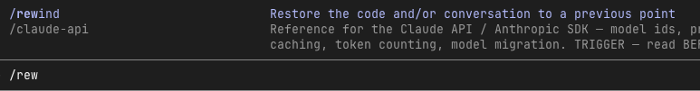
他最初请教的模型包括 GPT-6、Opus、Fable 和 Kimi，侧重关键判断，而非把执行工作再做一遍。
机械信号触发，顾问只读，还要写三栏请教卡
21 次决策请教里，顾问 10 次直接反对，11 次改掉了关键前提，没有一次完全同意。
- 顾问在只读沙箱里，看不到之前的对话。
- 请教卡分三栏：机械事实 / 我的判断 / 我希望听到的答案（第三栏就是给顾问挑错的）。
- 什么时候请教，看机械信号，不看模型自己的把握。
- 顾问也会错，它的意见同样要验证。
三个设计
原文 §4.4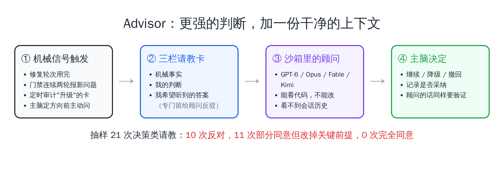
机械信号有四种：一张卡的修复次数用光；门禁连着两轮冒出新问题；定期审计把某张卡标成「升级」；主脑在定方向前自己发起。之所以不让模型自己决定，是因为它估不准自己有多大把握。
21次决策类请教（抽样）
10次顾问直接反对主脑方案
11次部分同意，但改掉了关键前提
0次顾问完全赞同主脑的方案
送去请教的大多本来就是主脑觉得不对或卡住的情况；反对率高，不等于顾问应该一律反对。
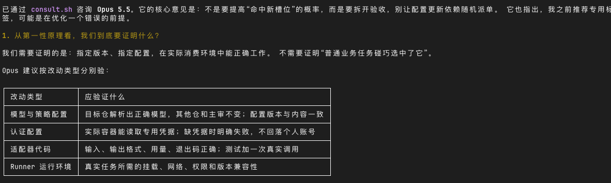
三个真实故事
建议放弃：这张卡守的不是红线
安全例外：一条都不能留
拦危险命令的钩子里有一组「cd 之后再删除」的豁免，已经修补多轮。顾问做了只读实验，证明 cd 本身能被偷换成别的操作；只凭命令文本，无法证明哪条例外安全。
主脑照办，豁免全部删除。排在最后的，应该排第一
给一项付费服务排待办时，主脑把一个还没定性的告警放到末尾。顾问指出，只有它真伤到过付费用户：有人付款后卡住 62 天，无人察觉。
当晚就修掉了。顾问也有错的时候：它曾断定「原来的路径本来就会报错」，实际复现后证明不对。所以顾问的话也得验证，作者说这正是下一部分（第五章 Loop）要讲的。
要紧的判断交给全面强的模型，并给它干净的上下文；具体执行交给便宜的模型。
一个用了两个月的配置仓库，怎样不让旧错重犯
所有坑都汇报到同一个仓库，每天派 Agent 处理；能根治的，都变成了脚本、闸门和测试。
- 演化三步：规矩进版本库 → 坑统一回流 → 脚本和闸门防复发。
- 关教训单只问一句：这个坑现在还踩得到吗？
- 约束从强到弱：代码结构 > lint > 规则和 Skill > 人审风格指南。
- 新工具也要用自己的日志回测，RTK 就是装了又卸的例子。
它是怎么长成这样的
原文 §5.1这个仓库一开始只用来管上下文（规则文件同步、Skill 管理），之后陆续加了主脑派活给执行器的机制、终端状态角标，最后成了作者所有 AI 学习的大本营。下面三步没有事先规划，都是边用边长出来的：
- 第 1 步规矩先入版本库：公共规则一份，每个工具再配一小段专属内容。
- 第 2 步所有问题都报回一处：调度、派卡、验收、记分时遇到的坑集中回流。
- 第 3 步靠脚本和闸门不让老问题回来：注入预算、自建记忆、请教顾问（Advisor）都出自这一步。
Loop 的雏形就在这里：其他仓库里的会话，凡是碰到调度或脚本层的问题，收工前都去 agent-config 开 issue；作者每天专门派 Agent 清理这些 issue。
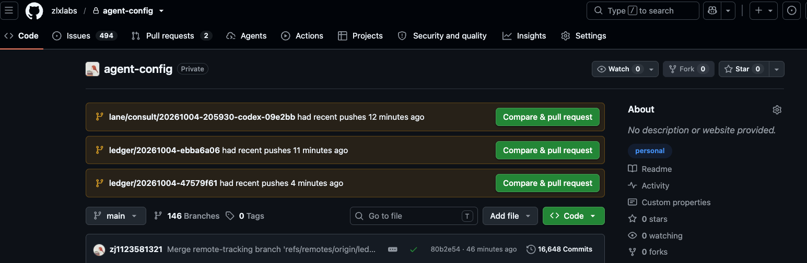
1100+张教训单（在 1800 多个 issue 里）
第 1 / 第 2Token 消耗最多的仓库：agent-config（想搭一套省心的体系，先得砸进大量投入），其次是门禁系统
飞机引擎边飞边换
原文 §5.2这个仓库一边当发动机，一边又是他要修理、要更换的东西。起初乱成一团、冲突不断，过了一阵才慢慢收敛、平稳下来：新冒出的问题，要么能挂到旧问题上，要么出现得越来越少。
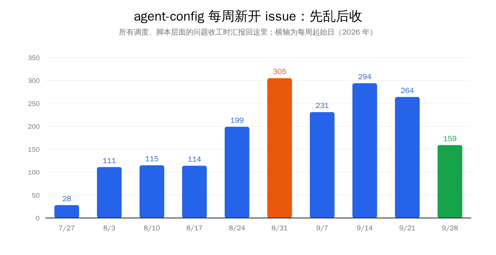
关单标准：只问一句：这个坑现在还会踩到吗？「修过了」不够，要做到「机制上再也不会发生」才关。
同样的错只犯一次
原文 §5.3测试打到了生产
执行器开隔离目录时只复制了顶层配置，下层配置缺了，程序就用默认值，结果接到了线上环境，而且一声不响。
改成用脚本建目录，各层配置自动接好；人和 Agent 都不再手动操作。推成功了，又多推两次
为省几行输出，Agent 爱把结果截短，结果把「失败」截没了；还有一次反过来，成功被显示成失败，又多推了两轮。
代码有没有推上去，只以远端服务器为准，不信本地输出。执行器把活转派了出去
任务卡漏写「你负责动手，别再转派」，执行器看到了主脑才该看的派活手册，把任务又派了出去，白转 90 分钟，什么也没做出来。
任务卡模板必须写角色；执行器拿到的规则去掉主脑部分。确认一个开关，烧掉几万 Token
只是想看一个服务是否在跑，主脑却用了会把整张任务卡打印出来的命令。这种浪费，不复盘就发现不了。几万 Token 因此挤进了上下文。
Context 里的浪费，要靠 Loop 中的复盘发现；这个例子说明了两者怎样交汇。
因此，错误是宝贵的材料：让另一个 Agent 翻日志，找出当时出错的原因，攒够了再从根上统一解决。作者说这也算「闻过则喜」。
写进提示，不如写进代码
原文 §5.4Claude 同一个错犯两次，就把纠正写进 CLAUDE.md。
Anthropic《The AI-native SDLC playbook》（作者译文）§5.4 引文
上面这条规则出自 Anthropic 的《AI-native SDLC playbook》。这份文档也提醒：Skill 只能减少违规，Hook（提交或运行时一定会执行、不合规就报错的小脚本）才能基本杜绝违规。xAI 的 Lauren 把约束按强弱排成四层；每次纠正 Agent，都选能起作用的最强一层落地：
- 最强代码结构与架构：从结构上让错误无法出现
- 次强静态分析和 lint：提交时自动扫描
- 较弱规则和 Skill：把约定写成模型要阅读的文字
- 最弱只能靠人审的风格指南
回头看那几个坑：被彻底解决的，都落成了脚本、闸门或测试；只写在规则里的，过段时间又换个样子回来。
新工具也得拿自己的日志检验
原文 §5.5有人推荐省 Token 的工具时，先别急着装：让 Agent 对照你本机的日志评估是否需要；用了一阵再回头核对：宣称的效果有没有、有没有副作用。
90%RTK 宣称部分场景能省的 Token
44%作者用本机 1505 次调用回测，实际省下的比例（作者说「听起来也不错」）
87%这些节省来自搜索和读文件，偏偏这两类最经不起压缩
问题不在省得少，而在省下的地方：这些节省大多来自最不该压缩的两类操作。压缩后的搜索结果会少行而不提示；读到的文件被压过，改代码时对不上，Agent 只好绕开工具重读原文件。于是他把 RTK 卸了。该问的是：它让 Agent 更懂上下文了，还是只添了新麻烦？
能用低一档验证的，就不要升到高一档
Loop 转不转得起来，看你有没有便宜又快的验证方式；而验证本身，也要先被验证。
- 验证按综合成本分三档：不花 Token 的检查、花 Token 的审查、人参与的检查。
- 选语言看两根轴：能不能自动验证，领域生态合不合适。
- 代码廉价，测试高价值；说不清「怎样算对」的目标最难迭代。
- 任何判据写完，先喂一个答案为「否」的输入，确认它会变红。
验证通道的光谱
原文 §6.1算成本要把三样加在一起：花的时间、额外的 Token、要不要人出手。
低成本零 Token、几秒出结果：编译、基础测试、lint。后端行为可以用测试固定下来。
中成本要花 Token：阿里出的 OpenCode Review、自己写的 Agent 审查，以及先录下前端操作、再交给 Agent 审视频。比测试贵，但远比人便宜。
高成本需要人来看。人的工夫最贵，只用在必须靠人判断的环节。
门禁负责把低、中两档连成一串：都通过才准合并，尽量别让检查落到人身上。这些通道会把反馈马上回传给 Agent；生产 bug 修掉后也要回溯为什么犯、下次怎么避免，这也是一个 Loop。
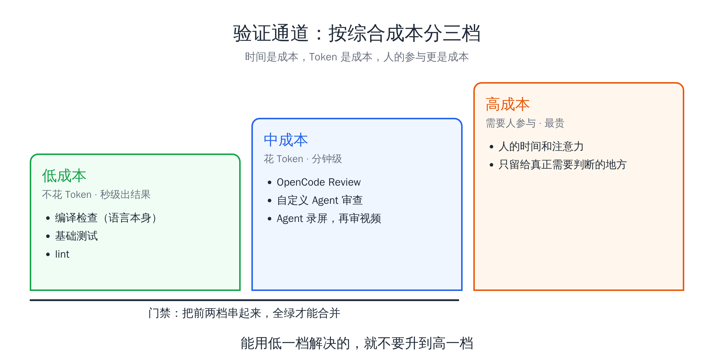
选语言：一个十字坐标
原文 §6.2作者说自己最近明显不再在意底层用哪门语言：有基本的编程思路，再加上 AI，哪种语言原则上都行。过去挑语言，首先看人写起来难不难（Python 简单、Rust 复杂），大家就挑自己擅长、顺手的；如今动手写代码的是 AI，这一点就没那么要紧了。作者手上 Go、Java 和 Python 项目都有；写一个功能乃至一个模块已经不难，难的始终是管住复杂度。
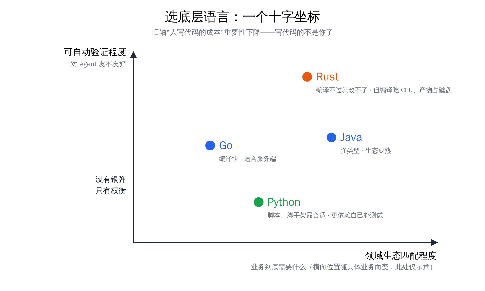
纵轴并非越高越好：Rust 编译耗 CPU、产物占硬盘，并发多了都是成本。没有万能解，只能取舍；不过对 Agent 而言，纵轴意味着便宜的反馈渠道，分量很重。
代码廉价，测试高价值
原文 §6.3验收标准是否清晰明确、能否形成反馈，已成了现代软件工程的核心目标。目标一旦能拆成一条条可验收的标准，剩下的不过是时间问题、成本问题。比如重写数据库或迁移仓库：只要有测试能证明新旧行为一致、踩过的坑也都已化成测试，主要就是投入最好的模型与 harness；测试没盖到的地方照样难。最难办的是说不清怎么打分的目标：后端性能有延迟、吞吐这些数字，很容易形成「改一版、测一下、再改」的循环；前端好不好看难以打分，Loop 就转不起来。
判据也会失效
原文 §6.4门禁系统（作者第二费 Token 的仓库）里，这类坑他踩过不少：
没考，被记成了及格
PR 还是草稿时，模型审查整段没跑；汇总时却把「没跑」算成「通过」，亮了绿灯。转为正式后，一连红了三次。
作者的共同防线：让判据先接受已知错误的检验。
从没判过卷的考官
用已知有问题的代码定期「考」审查模型，看它有没有变笨。一个多月跑了 111 次，可凭据始终没配对，没有一次真的判过卷。
还有几次
只固定了版本号、没固定行为，一升级 8 个仓库一起坏；机器闲着，任务却排队最长超过 8 小时；一张没人看的名单，让 32 个仓库的代码审查悄悄停了。
作者的共同防线：让判据先接受已知错误的检验。
这些坑有个共性：全显示绿灯，没有一个报错。从不变红的检查，有和没有一样。作者的要求：先试一个预期失败的输入，检查必须报错。
体系搭好后，瓶颈从精力变成了硬件
并发上了一个数量级，瓶颈像打地鼠，按下一个冒出一个；这些反馈链路都必须建。
- 这是作者的阶段性体感，会来回摆动：硬件加强后，瓶颈又回到精力。
- CPU、磁盘、GitHub 下载流量、CI 工位，轮流成为堵点。
- 只做 Coding、不被单一平台绑住时，Agent 用 Linux 比用 Mac 顺。
更高一层属于大公司：高质量 Token 不限量、上下文充足、基础设施齐全，三样都有，才撑得起 Claude Tag 和 OpenAI Dots 那种企业级用法。个人先把眼下这轮瓶颈解决掉。
CI 变成新堵点
原文 §7.1部分系统的负载大约涨了 10 倍。大多数公司要两三年才会涨到这个量，OpenAI 大约半年。
Venkat Venkataramani，见《Inside OpenAI’s agentic software factory》（作者译文）§7.1 引文
上面这段话出自 OpenAI 基础设施负责人 Venkat Venkataramani，见 The Pragmatic Engineer 介绍 OpenAI 软件工厂的那篇文章。文中还提到，版本管理、CI/CD 和发布环节到处都卡。（CI：合并前在专门机器上自动测试、审查的流水线。）作者常常同时开 20 个主脑，底下挂着三五十个执行器：
- 12 核开发机经常几个小时满负荷，CI 机器同样 99%，于是换了更强的开发机。
- 内存够了，磁盘接着不够。
- 没有缓存的话，从 GitHub 下载的流量也会卡住，还得花钱。
- 不增加机器、CI 不分层，CPU 会再次卡住。
6 个 → 84 个门禁 CI 能同时开工的工位，分布在四台机器上
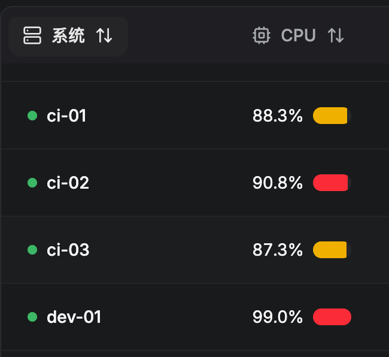
没有一次解决所有问题的办法，只能碰到一个解一个。如果会长期用，硬件宜早升级：内存、硬盘涨价已很明显，CPU 多半也要涨。
Linux 还是 Mac
原文 §7.2Loop 最怕卡在等人这一步。若看 Computer Use（AI 操作图形界面），Mac 是最佳选择：图形软件多，系统又是 Unix。但从 Agent 自己用的角度看，最佳的一定是 Linux：改什么都靠配置文件，用不着人再点一次授权；Mac 上不少权限要人亲手点「允许」，AI 做不到，循环在这里断掉；同样的设置在 Linux 上敲一条命令就行。Codex 负责人 Tibo 认为 Linux 元年可能就在 2026 年，作者赞同。
前提是只做 Coding、也不被某个平台绑住（像 iOS 开发离不开 Mac）：这时 Linux 比 Mac 更适合 Agent，作者自己现在就这么用；浏览器验证、Computer Use 这些能力，得另外补齐。
说到底，是给 Agent 搭一个工作环境
环境里的材料叫 Context，让环境自己变好的机制叫 Loop；Coding 之外也一样。
- 近来的几个新名词（ADE、ADLC 等）指的是同一层。
- Agent 进入任何环境，都看两点：Context 够不够，能不能形成 Loop。
- 学新东西也是 Loop：把文章交给 Agent，结合自己的日志判断值不值得吸收。
新名词很多，指的是同一层
原文 §8.1ADE（Orca 的叫法，全称 Agent Development Environment）、ADLC（Cloudflare 的叫法，全称 Agent Development Lifecycle）、「harness 的 harness」，指的都是一件事：在单个 Agent 之外加一层协作环境，用于 Agent 分工、交叉查证以及留存记录。下层单点的问题（某个模型能不能写好某个模块），老老实实享受模型进步就行。
作者目前最关注的三个方向：
方向 1调度：让主脑和执行器各司其职。
方向 2低成本、高质量的验证通道。
方向 3让验证过的东西顺顺当当进入生产环境。
Coding 之外
原文 §8.2作者在《老树开新花》里讲过 AI Native 组织分三层（可读、可写、可闭环）；一个代码仓库，可以看成缩小版的组织。
- 可读AI 能获取组织内的资料
- 可写允许 AI 修改系统中的记录
- 可闭环改完后能自动判对错，错误会被记录
学习本身也是一个 Loop
原文 §8.3过去大厂的好做法离不开重型基础设施，个人很难照搬；现在有 Agent 帮忙，个人能做的工程几乎没有上限。作者怎么决定学不学：把文章交给 Agent，对照自己的日志、过程中犯过的错、旧 issue 和单人负责的处境，判断哪些值得吸收、哪些不用管。RTK 装了又卸、Advisor 借来再改，都是这么来的。快的时候，别人上午分享的好做法，几小时后核心想法就用进了他的生产线。
人从环内退到环外
在对错能自动判定的工作里，如果越做越累，问题出在你调度 Agent 的方式上。
- 有了 Context，不用人在旁边补背景；有了 Loop，不用人在旁边挑错。
- 两样少一样，人就离不开这个环。
- 还不能自动验证对错的地方（审美、方向、取舍），人留在环内是正常的。
暂时还无法自动判对错的工作（前端审美、产品方向、权衡取舍），人留在环内、觉得累都很正常：先把「做对的标准」补上，再谈调度。起码在工程上，应当越干越轻松，把注意力腾出来，去管流量、权力分配这些工程以外的事。
人在环内每一步都要人看、人判断、人拍板。开头说要靠人高频盯着、每天约 40 亿 Token 才跑得动，就是这一阶段。整个循环里最慢的是人，转速受限于你每天醒着盯多久。
人在环外人只负责两件事：讲清楚「做对是什么样」，以及系统确实需要拍板时出来拍板。其余环节（派活、执行、验证、复盘、沉淀）由环自己运转。
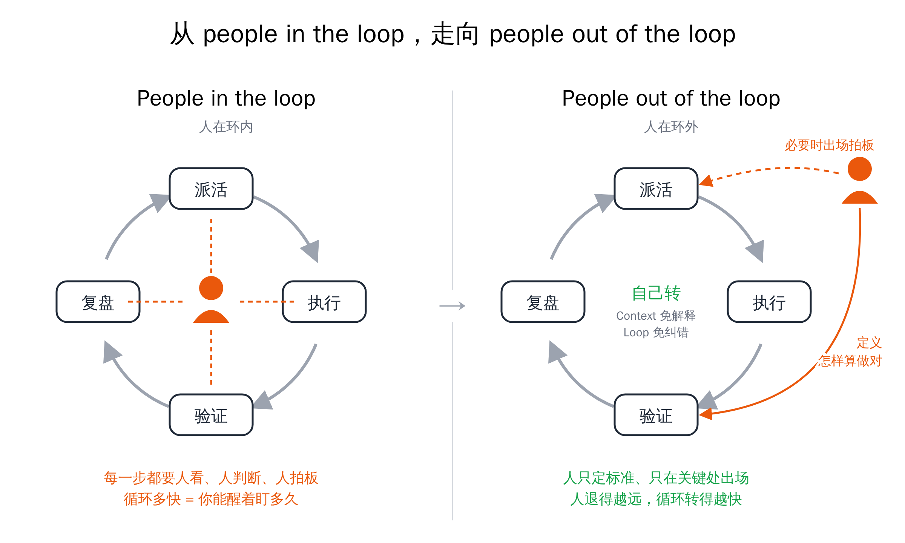
从环内走到环外，靠的不是更强的模型，而是本文那两样：有了 Context，旁边不必有人解释；有了 Loop，旁边不必有人纠错。
Context有意识地准备上下文：每样东西都要说得出留下的理由，能加也能删。
Loop有意识地构建闭环：每一次犯错都被记下、被验证，再写进下一次的上下文。
要做的就是持续把可验证的部分拆出来，交回给循环，让每次犯错都被记下来、验证，再写进下一次的上下文。开头会不顺，等 Loop 转起来，旧错几乎不会重犯；只会遇到些新的、没料到的问题，也有日志能查。人站得越远，循环转得越快。
吃一堑，长一智。前提是，这一堑被记下来了。
张立行，原文结尾写在最后
作者自称「一家之言，不一定对」。
附录：参考资料
原文附录原文附录列了 7 篇外部文章和访谈，以及本系列 3 篇前文。作者说人类读者可以跳过，把链接交给 Agent 即可。
原文附录链接
- The new rules of context engineering for Claude 5 generation models · Thariq / Claude：系统提示删减八成、渐进式披露、CLAUDE.md 只写坑
- Latent Space 对 Thariq 的访谈 · Latent Space：失败模式随模型变化、累积失败日志会过度约束
- The AI-native SDLC playbook · Anthropic：流程从线性改成闭环；同一个错犯两次就写成规则；Skill 和 Hook 怎么分工
- Inside OpenAI’s agentic software factory · The Pragmatic Engineer：OpenAI 软件工厂，有的系统半年里负载涨到约 10 倍
- The Agent Development Lifecycle has arrived on Cloudflare · Cloudflare：ADLC，给 Agent 用的平台要满足七条要求
- Orca CEO 访谈：AI 同时干二十件事时人在哪里出手 · Superlinear Academy：ADE，位于 harness 之上的一层
- Lauren（xAI）分享的总结与校对稿 · xAI：信任分层、验证技能、代码库就是最好的记忆
- Context is All You Need · 本系列前文：拿工作台打比方，讲上下文管理的基本做法
- 将军赶路不追小兔 · 本系列前文：主脑加执行层的多 Agent 调度（本文的主脑、执行器、门禁三角色，以及长期保存 Agent 行为数据，都在这篇里细讲过）
- 老树开新花 · 本系列前文：可读、可写、可闭环
- 博客原文
- X Article
写作说明：底稿来自飞书录音豆；Claude Code 与 Opus 5.5 做结构和整理，Codex 负责事实校核；稿件审阅分别交给 Kimi、Grok 和 Codex。附录 Lauren 的材料标题还注明上月有 2,500 个 PR 进入生产。
小测
用 5 道题检查你抓住主线没有
据原文各章出题，答错会带你回到对应章节